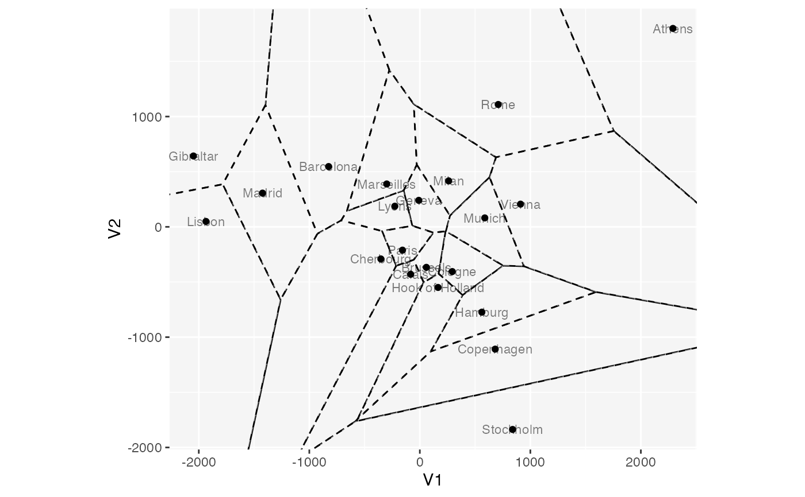
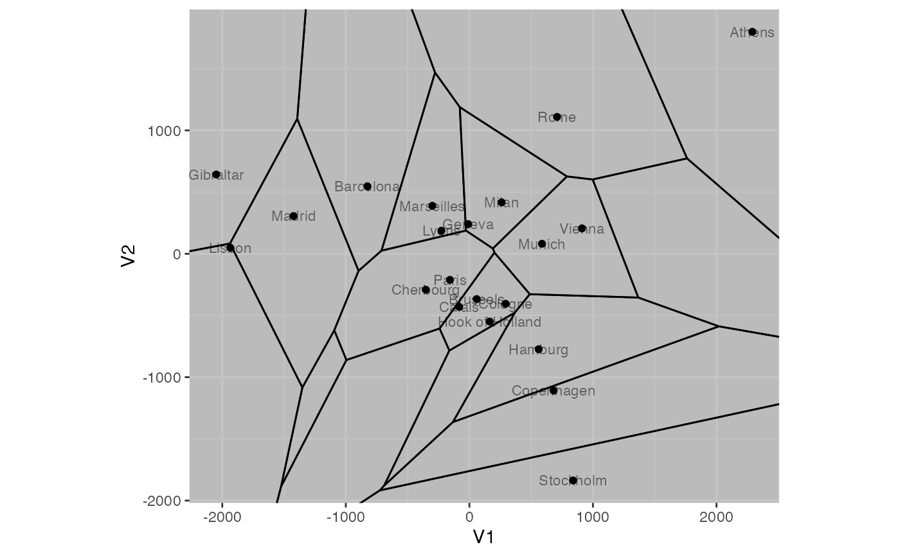
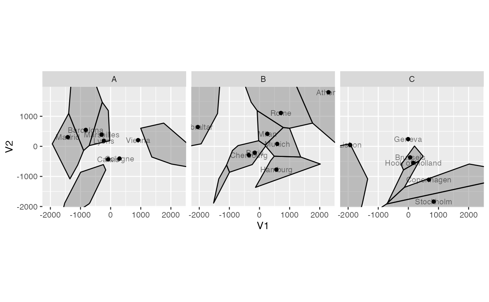
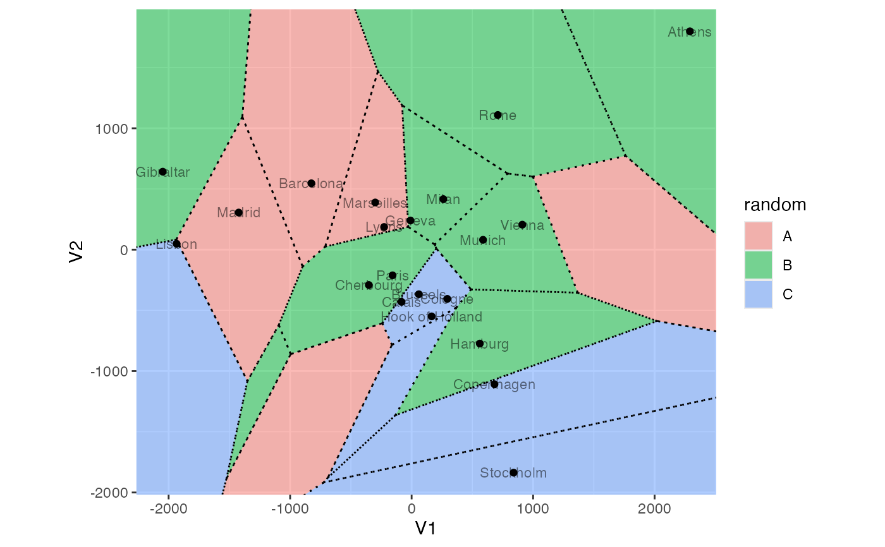

Compute Voronoi regions from point data.
Usage
stat_voronoi(
mapping = NULL,
data = NULL,
geom = "voronoi",
position = "identity",
engine = NULL,
show.legend = NA,
inherit.aes = TRUE,
...
)Arguments
- mapping
Set of aesthetic mappings created by
aes(). If specified andinherit.aes = TRUE(the default), it is combined with the default mapping at the top level of the plot. You must supplymappingif there is no plot mapping.- data
The data to be displayed in this layer. There are three options:
If
NULL, the default, the data is inherited from the plot data as specified in the call toggplot().A
data.frame, or other object, will override the plot data. All objects will be fortified to produce a data frame. Seefortify()for which variables will be created.A
functionwill be called with a single argument, the plot data. The return value must be adata.frame, and will be used as the layer data. Afunctioncan be created from aformula(e.g.~ head(.x, 10)).- geom
The geometric object to use to display the data for this layer. When using a
stat_*()function to construct a layer, thegeomargument can be used to override the default coupling between stats and geoms. Thegeomargument accepts the following:A
Geomggproto subclass, for exampleGeomPoint.A string naming the geom. To give the geom as a string, strip the function name of the
geom_prefix. For example, to usegeom_point(), give the geom as"point".For more information and other ways to specify the geom, see the layer geom documentation.
- position
A position adjustment to use on the data for this layer. This can be used in various ways, including to prevent overplotting and improving the display. The
positionargument accepts the following:The result of calling a position function, such as
position_jitter(). This method allows for passing extra arguments to the position.A string naming the position adjustment. To give the position as a string, strip the function name of the
position_prefix. For example, to useposition_jitter(), give the position as"jitter".For more information and other ways to specify the position, see the layer position documentation.
- engine
A single character string specifying the package implementation to use;
"deldir"or"geometry". Only"geometry"can handle higher-dimensional data.- show.legend
logical. Should this layer be included in the legends?
NA, the default, includes if any aesthetics are mapped.FALSEnever includes, andTRUEalways includes. It can also be a named logical vector to finely select the aesthetics to display. To include legend keys for all levels, even when no data exists, useTRUE. IfNA, all levels are shown in legend, but unobserved levels are omitted.- inherit.aes
If
FALSE, overrides the default aesthetics, rather than combining with them. This is most useful for helper functions that define both data and aesthetics and shouldn't inherit behaviour from the default plot specification, e.g.annotation_borders().- ...
Additional arguments passed to
ggplot2::layer().
Details
The Voronoi tessellation (also associated with the names Dirichlet
and Thiessen) of a set of points in a metric space comprises the
nearest-neighbor classification region around each point. When computed in
higher-dimensional real space, StatVoronoi$compute_layer() computes their
intersections with the plane.
stat_voronoi() is designed to pair with geom_voronoi() and
geom_thiessen(). The computed cell variable is a list-column of data
frames, each containing the vertex coordinates and border indicator for a
Voronoi cell.
Because linear discriminant analysis (LDA) assumes constant within-group inertia, the Voronoi regions about the group centroids serve as prediction regions in an LDA biplot (Gardner, 2001). When the LDA models more than three groups, proper prediction regions must be constructed in model space, then intersected with the biplot plane.
Voronoi cells are delimited within a rectangular border that extends to the edges of the plot window.
By default, deldir::deldir() is deployed on 2-dimensional data while
geometry::delaunayn() is deployed on higher-dimensional data; the user
may use the engine argument to override the default in 2 dimensions, but
in higher dimensions the geometry package is required.
Multidimensional position aesthetics
This statistical transformation is compatible with the convenience function
aes_coord().
Some transformations (e.g. stat_center()) commute with projection to the
lower (1 or 2)-dimensional biplot space. If they detect aesthetics of the
form ..coord[0-9]+, then ..coord1 and ..coord2 are converted to x and
y while any remaining are ignored.
Other transformations (e.g. stat_spantree()) yield different results in a
lower-dimensional biplot when they are computed before versus after
projection. If the stat layer detects these aesthetics, then the
transformation is performed before projection, and the results in the first
two dimensions are returned as x and y.
A small number of transformations (stat_rule()) are incompatible with
these aesthetics but will accept aes_coord() without warning.
Computed variables
These are calculated during the statistical transformation and can be accessed with delayed evaluation.
cella list-column of data frames, each containing the cell vertex coordinates (
x,y) and the border indicatorborder
References
Voronoï MG (1908) "Nouvelles applications des paramètres continus à la théorie des formes quadratiques. Premier Mémoire. Sur quelques propriétés des formes quadratiques positives parfaites." J. Reine Angew. Math. 133, 97–178. doi:10.1515/crll.1908.133.97
Voronoï MG (1908) "Nouvelles applications des paramètres continus à la théorie des formes quadratiquess. Deuxième Mémoire. Recherches sur les parallélloèdres primitifs." J. Reine Angew. Math. 134, 198–287. doi:10.1515/crll.1908.134.198
Gardner S (2001) Extensions of biplot methodology to discriminant analysis with applications of non-parametric principal components. PhD thesis, Stellenbosch University. http://hdl.handle.net/10019.1/52264
See also
Other stat layers:
stat_bagplot(),
stat_center(),
stat_chull(),
stat_cone(),
stat_delaunay(),
stat_depth(),
stat_rule(),
stat_scale(),
stat_spantree()
Examples
eurodist %>%
cmdscale(k = 6) %>%
as.data.frame() %>%
tibble::rownames_to_column(var = "city") ->
euro_mds
# planar regions (note superimposed perimeters)
ggplot(euro_mds, aes(V1, V2, label = city)) +
coord_equal() +
stat_voronoi(color = "black", fill = "transparent", linetype = "dashed") +
geom_point() +
geom_text(alpha = .5, size = 3)

# intersection of plane with full-dimensional regions, tight bounds
ggplot(euro_mds, aes_c(aes_coord(euro_mds, "V"), aes(label = city))) +
coord_equal() +
stat_voronoi(color = "black") +
geom_point(aes(V1, V2)) +
geom_text(aes(V1, V2), alpha = .5, size = 3)

# facet by a variable
set.seed(0)
euro_mds %>%
transform(random = LETTERS[sample(3, nrow(euro_mds), replace = TRUE)]) %>%
ggplot(aes_c(aes_coord(euro_mds, "V"), aes(label = city))) +
coord_equal() +
facet_grid(cols = vars(random)) +
stat_voronoi(color = "black") +
geom_point(aes(V1, V2)) +
geom_text(aes(V1, V2), alpha = .5, size = 3)

# overlay Voronoi tiles and Thiessen segments
set.seed(0)
euro_mds %>%
transform(random = LETTERS[sample(3, nrow(euro_mds), replace = TRUE)]) %>%
ggplot(aes_c(aes_coord(euro_mds, "V"), aes(label = city))) +
coord_equal() +
stat_voronoi(aes(fill = random)) +
stat_voronoi(geom = "thiessen", linetype = "dotted") +
geom_point(aes(V1, V2)) +
geom_text(aes(V1, V2), alpha = .5, size = 3)
